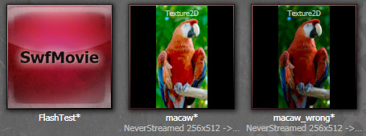

UDN
Search public documentation:
ScaleformImportKR
English Translation
日本語訳
中国翻译
Interested in the Unreal Engine?
Visit the Unreal Technology site.
Looking for jobs and company info?
Check out the Epic games site.
Questions about support via UDN?
Contact the UDN Staff
日本語訳
中国翻译
Interested in the Unreal Engine?
Visit the Unreal Technology site.
Looking for jobs and company info?
Check out the Epic games site.
Questions about support via UDN?
Contact the UDN Staff
스케일폼 GFx 임포트 파이프라인
문서 변경내역: Nick Atamas 작성. 홍성진 번역.
개요
SWF 를 언리얼 엔진 3 에 임포트하기
.SWF 파일을 언리얼 엔진 3 에 임포트하려면, 먼저 그 파일이
GameDir\Flash 폴더 내의 디렉토리에 있어야 합니다. 예로, UDKGame에서 .SWF 파일에 적합한 위치는 C:\UDK\UDK-2010-07\UDKGame\Flash\example\SomeFile.swf 정도가 됩니다. 언리얼 엔진 3 는 임포트 도중 애셋의 패키지, 그룹, 이름을 정하는 데 파일의 위치를 사용합니다. 예로 C:\UDK\UDK-2010-07\UDKGame\Flash\example\SomeFile.swf 는 SwfMovie'example.SomeFile' 로 임포트합니다.
상세 예제:
| 소스 파일 | 임포트 |
|---|---|
C:\UDK\UDK-2010-07\UDKGame\Flash\MyPackage\MyGroup\A.swf | SwfMovie'MyPackage.MyGroup.A' |
C:\UDK\UDK-2010-07\UDKGame\Flash\Pkg\Group_0\Group_1\B.swf | SwfMovie'Pkg.Group_0.Group_1.B' |
임포트 옵션
임포트 대화창에는 SWF 파일과 그에 연관된 애셋을 에디터로 임포트하는 방법에 영향을 끼치는 다양한 유저 설정 옵션이 제공됩니다.- Set sRGB On Imported Textures 텍스처 임포트시 sRGB 설정
- 켜면 임포트하는 텍스처를 sRGB 로 마킹합니다.
- Pack Textures 텍스처 패킹
- 켜면 언리얼 엔진 3 는 작은 텍스처를 더 큰 텍스처 아틀라스로 패킹하고, UV 오프셋을 사용하여 개별 텍스처를 리퍼런스합니다.
- Pack Texture Size 텍스처 크기 패킹
- Pack Textures 옵션이 켜졌을 때 패킹된 텍스처의 최대 크기입니다.
- Texture Rescale 텍스처 리스케일
- 텍스처를 임포트할 때 어떻게 스케일시킬지 사용자가 정하도록 하는 열거형입니다.
| FlashTextureScale_High | 현재 2승수 크기가 아닌 텍스처는 임포트 도중 그 다음으로 큰 2승수 크기로 스케일됩니다. | FlashTextureScale_Low | 현재 2승수 크기가 아닌 텍스처는 임포트 도중 그 다음으로 작은 2승수 크기로 스케일됩니다. | FlashTextureScale_NextLow | 현재 2승수 크기가 아닌 텍스처는 임포트 도중 두 번 작은 2승수 크기로 스케일됩니다. (100x60 텍스처는 64x32 가 아닌 32x16 이 됩니다.) | FlashTextureScale_Mult4 | 텍스처는 임포트 도중 4의 배수로 스케일됩니다. 이 옵션은 2승수가 아닌(NPOT) 텍스처 사용을 허가하기 위함입니다. | FlashTextureScale_None | 텍스처는 임포트 도중 스케일링되지 않으며, 사용자가 텍스처가 올바른지 (최소한 4의 배수인지 정도를) 직접 확인해야 합니다. 2승수가 아닌 텍스처의 사용이 가능해 집니다.메서드 설명
gfximport 커맨드렛
반복처리 시간 향상을 위해서, gfximport 커맨드렛을 사용하면 에디터 로딩 없이도 콘텐츠 임포트 및 리임포트가 가능합니다. 커맨드렛은 콘텐츠가 위에 기술한 방식으로 배치되어 있다 가정합니다. (SWF를 UE3로 임포트 부분 참고) 파일을 임포트하려면, 임포트하려는GameDir\Flash 디렉토리 내 모든 .SWF 파일을 공백으로 구분해서 상대 경로를 지정한 상태로 gfximport 커맨드렛을 실행해야 합니다.
UDKLift.exe gfximport [path_1] [path_2] [path_3]
UDKLift.exe gfximport
보기
이 파일들을 임포트하고 싶다 칩시다.- C:\UDK\UDK-2010-07\UDKGame\Flash\UI\MainMenu.swf
- C:\UDK\UDK-2010-07\UDKGame\Flash\UI\Resources.swf
UDKLift.exe gfximport UI/MainMenu.swf UI/Resources.swf
GameDir\Content\GFx\UI.upk 로 저장됩니다.
콘텐츠 브라우저를 사용하여 임포트하기
- 언리얼 에디터에서 콘텐츠 브라우저 를 엽니다.
- 콘텐츠 브라우저 왼쪽 아래에 임포트 버튼을 클릭합니다.
- 파일이 있는 곳으로 이동한 다음 임포트하려는 .SWF 파일을 클릭하고 열기를 선택합니다.
GameDir\Flash 디렉토리에 있어야 합니다.
임포트 도중 .SWF 파일이 사용하는 텍스처는 모두 지정한 패키지에 텍스처로 임포트됩니다. 언리얼 에디터는 연결 식별자에 따라 원래 .PNG 텍스처를 찾아봅니다. 언리얼 에디터는 찾을 수 없는 텍스처에 대한 경고를 띄웁니다.
macaw.png 를 임포트하는데, 과도히 밝아 보이기는 해도 제대로 된 결과를 내고 있습니다. Macaw_wrong.png 에는 sRGB 플랙이 켜져 있는데, 콘텐츠 브라우저에서는 올바르게 보이지만 렌더링 결과물은 너무 어두울 것입니다.

콘텐츠를 저작할 때, .FLA 라이브러리의 모든 텍스처의 프로퍼티에서 Lossless (PNG/GIF) (무손실) 압축으로 설정되었는지 확인하십시오. 그리 해 놓지 않으면 JPEG 압축때문에 엔진으로 옮겨온 색에 약간의 부작용과 잘못된 부분이 나타나게 됩니다. 이 문제는 독립형 플래시 플레이어에서만 발생하는데, 언리얼 에디터는 원본 .PNG 파일에서 텍스처를 임포트하기 때문입니다. 텍스처 스케일을 조절하려는 경우 텍스처 프로퍼티에서 Allow Smoothing 옵션을 켜 주십시오. 그리 하지 않을 경우 스케일 조절된 텍스처가 매우 각져 보일 것입니다.텍스처를 플래시에 임포트하기
- 텍스처는 항상 .PNG 파일로 저장하십시오.
- 모든 텍스처는 익스포트하려는 .swf 파일 이름과 같은 동기관계 폴더에 있어야 합니다.
- 예로
import_example.fla파일을 작업중이라 치겠습니다.C:\UDK\UDK-2010-07\UDKGame\Flash\example\import_example.fla <-- 편집중인 문서 C:\UDK\UDK-2010-07\UDKGame\Flash\example\import_example.swf <-- 익스포트하려는 swf C:\UDK\UDK-2010-07\UDKGame\Flash\example\import_example\background.png / C:\UDK\UDK-2010-07\UDKGame\Flash\example\import_example\UDK_Logo.png <-- UE3가 텍스처를 찾아볼 곳 C:\UDK\UDK-2010-07\UDKGame\Flash\example\import_example\udk_panel_01.png \
- 예로
- 모든 파일의 Linkage Identifier(연결 식별자)가 UE3에 원본 아트워크를 찾을 곳을 알려 줍니다. 그렇게 연결 ID를 설정합니다.
- 라이브러리 패널에서 바꾸려는 텍스처의 리소스 위치를 지정합니다. 주의: 인스턴스가 아닌 리소스여야 합니다. 옆에 나무 모양 작은 아이콘이 있을 것입니다. ().
- 원하는 리소스에다 우클릭하고, Properties 를 선택합니다.
- Linkage 부분 아래 Export for ActionScript 및 Export in frame 1 체크박스를 둘 다 체크합니다.
- 이미지에 고유 식별자를 줍니다. 소스 파일의 확장자를 제외한 이름에 일치해야 합니다. (예:__background)

텍스처 압축 문제 처리
강한 선이나 그레디언트에 의지하는 텍스처의 경우, 압축이 가끔 텍스처를 망치는 경우가 있습니다. 이 문제는 여러 가지 방법으로 해결할 수 있습니다.- 텍스처의 LOD Group 이 UI 로 설정되었는가 확인합니다.
-
Engine.ini파일의 UI LOD 그룹의 세팅을 다시 확인합니다. Bias 가 0 이외의 것으로 설정되어 있는 경우, 언리얼 엔진이 텍스처의 다른 밉맵을 강제로 사용하도록 합니다. - 이러한 텍스처용 밉맵을 끕니다.
 그러면 텍스처 스트리밍이 꺼지니, UI 텍스처용으로만 해 주시기 바랍니다!
그러면 텍스처 스트리밍이 꺼지니, UI 텍스처용으로만 해 주시기 바랍니다!
- 색감을 향상시키기 위해서는 텍스처 분할도 생각해 보십시오. 압축은 보통 텍스처를 흐리게 만들기에 색 왜곡이 생길 수도 있습니다. 단일 텍스처를 사용하기 보다는 단순히 엘리먼트 레이어를 만들면 전체적인 색감을 드높이는 데 도움이 되기도 합니다.
- non-bilinear 스케일된 텍스처로 시험해 보십시오. 아주 곧고 정확한 텍스처가 필요한 경우, 이 부작용 중 일부가 게임 내 스케일된 텍스처로 수행한 양선형 필터링에 의해 증폭될 수도 있습니다. 고로 non-bilinear 스케일된 텍스처로 시험해 보면 비주얼 퀄리티를 높일 수도 있습니다.
- 언리얼 에디터의 텍스처 압축 메서드로 실험해 보십시오. 가끔 TC_Default 이외의 것을 사용하면 더 많은 자료를 유용할 수도 있는 다른 텍스처 채널로 돌릴 수도 있으나, 압축 세팅이 변경되어 메모리 사용량이 늘어나게 될 수도 있습니다.
- 텍스처 일부가 매우 어둡다면, 색을 반전시킨 다음 플래시 내에서 텍스처 클립의 밝기를 (-100 정도) 음수 값으로 설정하거나 검정 색조로 해 주면 해결할 수 있습니다. 이런 식으로 텍스처의 어두운 부분에 나타나는 녹색 및/또는 보라색 압축 부작용이 해결될 수도 있습니다.
- 텍스처 일부에 알파가 있고, 텍스처 압축 결과가 기대 이하인 경우, 알파가 포함된 무비 클립을 염두에 두는 것도 그러한 문제를 경감시키는 데 도움이 될 수 있습니다. 알파 채널 없이 텍스처를 저장하면 보통 텍스처의 비주얼 퀄리티가 향상됩니다.
- 나머지가 전부 실패한다면, 전체적인 텍스처 압축 악영향을 감소시키기 위해 이 텍스처의 해상도를 두 배로 해 보는 것도 생각해 보시기 바랍니다.
리소스 공유하기
리소스 공유의 가장 흔한 형태는 .swf 파일을 이미지의 라이브러리로 사용하여 다른 .swf 파일에 의해 차례로 사용되도록 하는 것입니다. 예로 게임 내 메뉴에 사용되는 이미지 세트가 전부 포함된 .swf 파일이 있다 칩시다. 콘텐츠 중복을 피하기 위해 여러 메뉴가 이 텍스처를 리퍼런스할 수 있습니다. 예제 파일
UDKGame/Flash/example_resources/buttons.fla 및 UDKGame/Flash/example/uses_resources.fla 를 참고해 보십시오.
이 리소스 공유 예제는 각기 다른 SwfMovie 뿐만 아니라 각기 다른 패키지 간의 애셋 공유 데모도 됩니다. 주목해 볼 것은 buttons.swf 가 example_resources/ 디렉토리에 위치해 있어서, 이를 통해 결과적으로 example_resources.upk 패키지 안으로 임포트하게 된다는 것입니다. 반면에 example/uses_resources.swf 은 example/ 안에 있으며, example.upk 속으로 임포트하게 됩니다.
실행시간 공유용 익스포트
첫 단계는 다른 .SWF 파일로의 텍스처를 담당할 .SWF 파일을 만드는 것입니다. 이 예제에서 그 역할은 buttons.swf 가 맡고 있습니다.- 보통처럼 라이브러리 속에다 이미지를 임포트하십시오.
- 리소스에 우클릭하고 Properties 를 선택합니다.
- 다음을 확인합니다:
- Allow Smoothing (스무딩 허용) 체크
- Compression (압축) 은 Lossless (PNG/GIF) 로 설정. JPEG을 사용하면
에러: Jpeg 시스템이 설치되지 않아 jpeg 이미지 데이터를 로드할 수 없습니다라는 에러가 뜹니다. - Identifier (식별자) 필드가 이 애셋에 사용되는 PNG (확장자를 제외한) 파일 이름과 일치해야 합니다.
- Export for runtime sharing (런타임 공유용 익스포트하기) 체크를 확인하십시오.
- URL 필드는 익스포트하려는 .SWF 파일 이름 (예로 buttons.swf) 이어야 합니다.

- Identifier 필드에 점이 포함되어 있지는 않은지 꼭 확인하십시오!
실행시간 공유용 임포트
실행시간 공유용 임포트 데모는example/resource_sharing.swf 에 있습니다.
- 플래시 콘텐츠 제작 패키지에
buttons.fla와resource_sharing.fla가 둘 다 열렸는지 확인하십시오. - 라이브러리 탭 아래에서
buttons.fla를 선택합니다. 그러면buttons.fla파일에서 사용가능한 텍스처 리소스를 확인할 수 있습니다.

- 공유하려는 리소스를 선택하고, 우클릭한 뒤 Copy 를 선택하여 복사합니다.
- 라이브러리를
resource_sharing.fla로 전환합니다. - 우클릭한 뒤 Paste 를 선택하여 라이브러리에 텍스처를 붙여넣습니다.
- 새로운 리소스 각각에 우클릭하고 Properties 를 선택하여 새로이 임포트한 텍스처에 대한 텍스처 세팅을 조절합니다.
- Identifier 가 올바르게 설정되었는지 확인합니다.
- Import for runtime sharing 이 체크되었는지 확인합니다.
- URL 필드를 리소스를 포함하고 있는 .swf 파일의 상대 경로가 되도록 변경합니다. 이 예제에서는
..\example_resources\buttons.swf입니다.

의존성
일괄처리나 의존성을 확인하기 위한 툴은 마땅히 없습니다. 서로 의존하는 SWF 파일이 여럿 있는 경우, import 커맨드렛을 사용해서 임포트할 SWF 를 각각 지정하면 모두 알맞게 임포트되도록 할 수 있습니다.
기타 텍스처 파이프라인 공지
- 어도비 플래시 스튜디오에서 벡터 그레디언트 필 메서드를 통한 벡터 그레디언트 사용을 피하십시오. 그레디언트가 필요하면 비트맵으로 만드십시오! 그 이유는, 언리얼 엔진 3 로 .SWF 를 임포트하고 나서 그레디언트가 익스포트되는 방식에 있습니다. 그 그레디언트에 텍스처를 여러개 만들어 버리니, 매우 비효율적인 것이지요! 어떤 경우에도 벡터 그레디언트 사용은 피하시고, 비트맵 그레디언트로 만드시기 바랍니다.
- CLIK 버튼은 Scale9 를 사용하여 텍스트 폭에 따라 그 크기를 조절합니다. 버튼 인스턴스 자체 크기가 조절되므로, 인스턴스 안에 콘텐츠가 있으면 왜곡되어 보일 것입니다. 원하는 결과가 나오지 않으면 현지화 텍스트용 공간을 충분히 두거나, 초기 텍스트 테두리에 더욱 꼭 맞도록 그림을 조절하면 됩니다.
- CLIK 컴포넌트 작업시 항상 무비클립의 프로퍼티와 컴포넌트 정의가 올바른 클래스를 가리키는지 확인하십시오. 이 두 클래스 정의 모두 같을테지만, 두 곳에서 설정해 줘야 합니다.
- 식별자 이름이 적절히 설정되었는지 항상 확인하십시오. 예를 들어 ScrollingLists 작업시, ListItemRenderer 식별자는 ScrollingList 가 목록의 오브젝트를 그리는 데 사용하는 것입니다. 뭔가 작동하지 않기 시작하면 지옥의 시작이지요.
- 가능하면 언제든 2 제곱 텍스처를 사용하도록 하십시오. 2 제곱이 아닌 텍스처가 GFx 에 지원되기는 하지만, 언리얼 엔진 3 는 현재 지원하지 않고 있으며, 텍스처를 가장 가까운 2 제곱 크기로 자동 스케일 조절합니다. 이를 통해 파일 크기가 커 지거나, 왜곡되거나, 바람직하지 못한 부작용이 생길 수 있습니다. 텍스처 크기의 일관성을 유지하고 2 제곱 텍스처로 작업해 주기만 하면 이런 문제는 발생하지 않을 것입니다.
- 다중 레이어 마스크와 마스킹은 퍼포먼스에 안좋은 영향을 끼칩니다. 간단히!
- 가능하면 CLIK 컴포넌트 내 적절한 계층구조를 유지하십시오. 버튼 컴포넌트 안에 textField 를 움직이고 싶을 수도, 그것을 무비클립 안에 넣어야 할 수도 있습니다. 그런 경우 그 텍스트 프로퍼티를 무비클립 내 부모로 되 밀어올려 줘야 할 것입니다:
-
gfx.controls.button을 사용하여,buttonName_mc.textField의 textField 를buttonName_mc.textAnim_mc.textField로 이동합니다. - 다음 부분이 textAnim_mc 인스턴스에 ActionScript 로 들어갑니다: 부모의 CLIK label 프로퍼티 값을 텍스트 필드의 text 프로퍼티에 할당합니다.
img_pressStart.textField.text = _parent._label;
-
- 렌더 타겟 텍스처가 프레임 버퍼보다 작아야 콘솔에서 제대로 나옵니다.